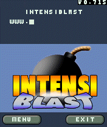
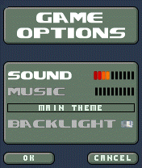
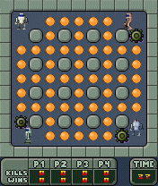
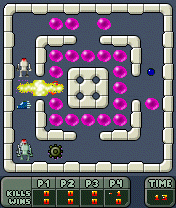
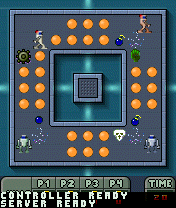
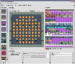

|  |  |  |  |  |  |
| Title screen | Game Options | First Level | Third Level | Sixth Level | Level Editor |
In general all Series 60 phones are supported.
After downloading the game .SIS file from this site, transfer it to your phone via Bluetooth or Email. The automatic installation feature of your phone should then guide you through the installation process. Make sure you install it to your memory card - if your phone has one :)
Left softkey for selection
Right softkey for cancel/back
* key for planting bombs (and/or selection)
# key for triggering trigger bombs
Stick and/or cursor pad for moving
In the title screen press left softkey to see main menu. Select "New Game" for singleplayer game. Then select number of bots (your enemies) you want to play against and choose a starting level. That's it, now the game starts by showing the "GetReady" screen. Press the fire button (* key) to start the next level.
In the title screen press the left sofkey to see the main menu. Select "Network Game". First, start all the clients by selecting "CLIENT". An intermediate screen showing "WAITING FOR CONNECTION" appears. After all clients are started (up to three supported), start the server (on another phone, obviously) by selecting "SERVER". Now the server scans the Bluetooth neighbourhood. This may take up to 10 seconds. After the connection to all clients has been established, the game starts with the "GetReady" screen.
The game consits of levels containing blastable and non-blastable blocks. Try blasting the blocks and pick up the extras to increase your number of bombs and the bomb strength. Try to find the BombKickaTM or the BombThrowaTM. Try to blast away your enemies by planting bombs next to them, or trapping them inside the level. Try using the BombThrowaTM or BombKickaTM to blast them from the distance!
Make skins downloadable
Make soundsets exchangable
Make connecting clients easier and show the progress and more infos
Make communication/protocol more robust
Streamline communications - too much data is sent with the current implementation (and that kills the server from time to time)
None (known.. :)
Uses latest release of the Game.Engine.Dll
Includes two skins with about 40 levels each
Level editor improved (a bit faster now)
Multi-Player Mode: Clients can disconnect now and will be replaced by PLACEBOTs
Added more levels and a level editor
Added skin changer (SELECT->OPTIONS->SKIN) and two simple skins
Multi-Player Mode fully working now
Multi-Player Mode (two players only) fully working now
Implemented several deseases (Invisible, Inverse Controls, Speed Up, Slow Down, BombShittaTM :)
Improved sound engine with reduced latency
Fixed AI. Now the CI (third generation of our AI) rulez!
Added a sound engine, a title MOD and in-game sounds
Multiplayer Mode is working now
Initial public release
Added foundation for Multiplayer Mode
Added Bluetooth stuff
Initial non-public release
:: 2004-06-09 :: IntensiBlast SIS for Series 60 (340 KB) ::
:: Level Editor for IntensiBlast Level Data ::
{kind=link}
{kind=link}
{kind=link}
{kind=link}
{kind=link}
{kind=link}